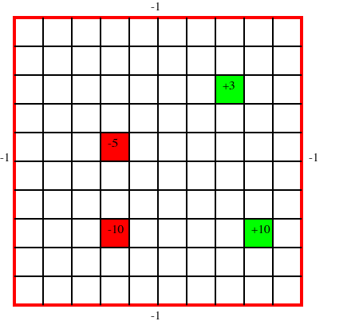

GridWorld MDP Tutorial
In this tutorial, we provide a simple example of how to define a Markov decision process (MDP) using the POMDPS.jl interface. We will then solve the MDP using value iteration and Monte Carlo tree search (MCTS). We will walk through constructing the MDP using the explicit interface which involves defining a new type for the MDP and then extending different components of the POMDPs.jl interface for that type.
Dependencies
We need a few modules in order to run this example. All of the models can be added by running the following command in the Julia REPL:
using Pkg
Pkg.add("POMDPs")
Pkg.add("POMDPTools")
Pkg.add("DiscreteValueIteration")
Pkg.add("MCTS")If you already had the models installed, it is prudent to update them to the latest version:
Pkg.update()Now that we have the models installed, we can load them into our workspace:
using POMDPs
using POMDPTools
using DiscreteValueIteration
using MCTSProblem Overview
In Grid World, we are trying to control an agent who has trouble moving in the desired direction. In our problem, we have four reward states within the a grid. Each position on the grid represents a state, and the positive reward states are terminal (the agent stops receiving reward after reaching them and performing an action from that state). The agent has four actions to choose from: up, down, left, right. The agent moves in the desired direction with a probability of $0.7$, and with a probability of $0.1$ in each of the remaining three directions. If the agent bumps into the outside wall, there is a penalty of $1$ (i.e. reward of $-1$). The problem has the following form:

Defining the Grid World MDP Type
In POMDPs.jl, an MDP is defined by creating a subtype of the MDP abstract type. The types of the states and actions for the MDP are declared as parameters of the MDP type. For example, if our states and actions are both represented by integers, we can define our MDP type as follows:
struct MyMDP <: MDP{Int64, Int64} # MDP{StateType, ActionType}
# fields go here
endIn our grid world problem, we will represent the states using a custom type that designates the x and y coordinate within the grid. The actions will by represented by a symbol.
GridWorldState
There are numerous ways to represent the state of the agent in a grid world. We will use a custom type that designates the x and y coordinate within the grid.
struct GridWorldState
x::Int64
y::Int64
endTo help us later, let's extend the == for our GridWorldStat:
function Base.:(==)(s1::GridWorldState, s2::GridWorldState)
return s1.x == s2.x && s1.y == s2.y
endGridWorld Actions
Since our action is the direction the agent chooses to go (i.e. up, down, left, right), we can use a Symbol to represent it. Note that in this case, we are not defining a custom type for our action, instead we represent it directly with a symbol. Our actions will be :up, :down, :left, and :right.
GridWorldMDP
Now that we have defined our types for states and actions, we can define our MDP type. We will call it GridWorldMDP and it will be a subtype of MDP{GridWorldState, Symbol}.
struct GridWorldMDP <: MDP{GridWorldState, Symbol}
size_x::Int64 # x size of the grid
size_y::Int64 # y size of the grid
reward_states_values::Dict{GridWorldState, Float64} # Dictionary mapping reward states to their values
hit_wall_reward::Float64 # reward for hitting a wall
tprob::Float64 # probability of transitioning to the desired state
discount_factor::Float64 # discount factor
endWe can define a constructor for our GridWorldMDP to make it easier to create instances of our MDP.
function GridWorldMDP(;
size_x::Int64=10,
size_y::Int64=10,
reward_states_values::Dict{GridWorldState, Float64}=Dict(
GridWorldState(4, 3) => -10.0,
GridWorldState(4, 6) => -5.0,
GridWorldState(9, 3) => 10.0,
GridWorldState(8, 8) => 3.0),
hit_wall_reward::Float64=-1.0,
tprob::Float64=0.7,
discount_factor::Float64=0.9)
return GridWorldMDP(size_x, size_y, reward_states_values, hit_wall_reward, tprob, discount_factor)
endMain.GridWorldMDPTo help us visualize our MDP, we can extend show for our GridWorldMDP type:
function Base.show(io::IO, mdp::GridWorldMDP)
println(io, "Grid World MDP")
println(io, "\tSize x: $(mdp.size_x)")
println(io, "\tSize y: $(mdp.size_y)")
println(io, "\tReward states:")
for (key, value) in mdp.reward_states_values
println(io, "\t\t$key => $value")
end
println(io, "\tHit wall reward: $(mdp.hit_wall_reward)")
println(io, "\tTransition probability: $(mdp.tprob)")
println(io, "\tDiscount: $(mdp.discount_factor)")
endNow lets create an instance of our GridWorldMDP:
mdp = GridWorldMDP()Grid World MDP
Size x: 10
Size y: 10
Reward states:
Main.GridWorldState(9, 3) => 10.0
Main.GridWorldState(8, 8) => 3.0
Main.GridWorldState(4, 6) => -5.0
Main.GridWorldState(4, 3) => -10.0
Hit wall reward: -1.0
Transition probability: 0.7
Discount: 0.9
In this definition of the problem, our coordinates start in the bottom left of the grid. That is GridState(1, 1) is the bottom left of the grid and GridState(10, 10) would be on the right of the grid with a grid size of 10 by 10.
Grid World State Space
The state space in an MDP represents all the states in the problem. There are two primary functionalities that we want our spaces to support. We want to be able to iterate over the state space (for Value Iteration for example), and sometimes we want to be able to sample form the state space (used in some POMDP solvers). In this notebook, we will only look at iterable state spaces.
Since we can iterate over elements of an array, and our problem is small, we can store all of our states in an array. We also have a terminal state based on the definition of our problem. We can represent that as a location outside of the grid (i.e. (-1, -1)).
function POMDPs.states(mdp::GridWorldMDP)
states_array = GridWorldState[]
for x in 1:mdp.size_x
for y in 1:mdp.size_y
push!(states_array, GridWorldState(x, y))
end
end
push!(states_array, GridWorldState(-1, -1)) # Adding the terminal state
return states_array
endLet's view some of the states in our state space:
@show states(mdp)[1:5]5-element Vector{Main.GridWorldState}:
Main.GridWorldState(1, 1)
Main.GridWorldState(1, 2)
Main.GridWorldState(1, 3)
Main.GridWorldState(1, 4)
Main.GridWorldState(1, 5)We also need a other functions related to the state space.
# Check if a state is the terminal state
POMDPs.isterminal(mdp::GridWorldMDP, s::GridWorldState) = s == GridWorldState(-1, -1)
# Define the initial state distribution (always start in the bottom left)
POMDPs.initialstate(mdp::GridWorldMDP) = Deterministic(GridWorldState(1, 1))
# Function that returns the index of a state in the state space
function POMDPs.stateindex(mdp::GridWorldMDP, s::GridWorldState)
if isterminal(mdp, s)
return length(states(mdp))
end
@assert 1 <= s.x <= mdp.size_x "Invalid state"
@assert 1 <= s.y <= mdp.size_y "Invalid state"
si = (s.x - 1) * mdp.size_y + s.y
return si
endLarge State Spaces
If your problem is very large we probably do not want to store all of our states in an array. We can create an iterator using indexing functions to help us out. One way of doing this is to define a function that returns a state from an index and then construct an iterator. This is an example of how we can do that for the Grid World problem.
If you run this section, you will redefine the states(::GridWorldMDP) that we just defined in the previous section.
# Define the length of the state space, number of grid locations plus the terminal state
Base.length(mdp::GridWorldMDP) = mdp.size_x * mdp.size_y + 1
# `states` now returns the mdp, which we will construct our iterator from
POMDPs.states(mdp::GridWorldMDP) = mdp
function Base.getindex(mdp::GridWorldMDP, si::Int) # Enables mdp[si]
@assert si <= length(mdp) "Index out of bounds"
@assert si > 0 "Index out of bounds"
# First check if we are in the terminal state (which we define as the last state)
if si == length(mdp)
return GridWorldState(-1, -1)
end
# Otherwise, we need to calculate the x and y coordinates
y = (si - 1) % mdp.size_y + 1
x = div((si - 1), mdp.size_y) + 1
return GridWorldState(x, y)
end
function Base.getindex(mdp::GridWorldMDP, si_range::UnitRange{Int}) # Enables mdp[1:5]
return [getindex(mdp, si) for si in si_range]
end
Base.firstindex(mdp::GridWorldMDP) = 1 # Enables mdp[begin]
Base.lastindex(mdp::GridWorldMDP) = length(mdp) # Enables mdp[end]
# We can now construct an iterator
function Base.iterate(mdp::GridWorldMDP, ii::Int=1)
if ii > length(mdp)
return nothing
end
s = getindex(mdp, ii)
return (s, ii + 1)
endSimilar to above, let's iterate over a few of the states in our state space:
@show states(mdp)[1:5]
@show mdp[begin]
@show mdp[end]Main.GridWorldState(-1, -1)Grid World Action Space
The action space is the set of all actions available to the agent. In the grid world problem the action space consists of up, down, left, and right. We can define the action space by implementing a new method of the actions function.
POMDPs.actions(mdp::GridWorldMDP) = [:up, :down, :left, :right]Similar to the state space, we need a function that returns an index given an action.
function POMDPs.actionindex(mdp::GridWorldMDP, a::Symbol)
@assert in(a, actions(mdp)) "Invalid action"
return findfirst(x -> x == a, actions(mdp))
endGrid World Transition Function
MDPs often define the transition function as $T(s^{\prime} \mid s, a)$, which is the probability of transitioning to state $s^{\prime}$ given that we are in state $s$ and take action $a$. For the POMDPs.jl interface, we define the transition function as a distribution over the next states. That is, we want $T(\cdot \mid s, a)$ which is a function that takes in a state and an action and returns a distribution over the next states.
For our grid world example, there are only a few states to which the agent can transition and thus only a few states with nonzero probability in $T(\cdot \mid s, a)$. We can use the SparseCat distribution to represent this. The SparseCat distribution is a categorical distribution that only stores the nonzero probabilities. We can define our transition function as follows:
function POMDPs.transition(mdp::GridWorldMDP, s::GridWorldState, a::Symbol)
# If we are in the terminal state, we stay in the terminal state
if isterminal(mdp, s)
return SparseCat([s], [1.0])
end
# If we are in a positive reward state, we transition to the terminal state
if s in keys(mdp.reward_states_values) && mdp.reward_states_values[s] > 0
return SparseCat([GridWorldState(-1, -1)], [1.0])
end
# Probability of going in a direction other than the desired direction
tprob_other = (1 - mdp.tprob) / 3
new_state_up = GridWorldState(s.x, min(s.y + 1, mdp.size_y))
new_state_down = GridWorldState(s.x, max(s.y - 1, 1))
new_state_left = GridWorldState(max(s.x - 1, 1), s.y)
new_state_right = GridWorldState(min(s.x + 1, mdp.size_x), s.y)
new_state_vector = [new_state_up, new_state_down, new_state_left, new_state_right]
t_prob_vector = fill(tprob_other, 4)
if a == :up
t_prob_vector[1] = mdp.tprob
elseif a == :down
t_prob_vector[2] = mdp.tprob
elseif a == :left
t_prob_vector[3] = mdp.tprob
elseif a == :right
t_prob_vector[4] = mdp.tprob
else
error("Invalid action")
end
# Combine probabilities for states that are the same
for i in 1:4
for j in (i + 1):4
if new_state_vector[i] == new_state_vector[j]
t_prob_vector[i] += t_prob_vector[j]
t_prob_vector[j] = 0.0
end
end
end
# Remove states with zero probability
new_state_vector = new_state_vector[t_prob_vector .> 0]
t_prob_vector = t_prob_vector[t_prob_vector .> 0]
return SparseCat(new_state_vector, t_prob_vector)
endLet's examline a few transitions:
@show transition(mdp, GridWorldState(1, 1), :up) SparseCat distribution
┌ ┐
Main.GridWorldState(1, 2) ┤■■■■■■■■■■■■■■■■■■■■■■■■■■■■■■■■■■■ 0.7
Main.GridWorldState(1, 1) ┤■■■■■■■■■■ 0.2
Main.GridWorldState(2, 1) ┤■■■■■ 0.1
└ ┘ @show transition(mdp, GridWorldState(1, 1), :left) SparseCat distribution
┌ ┐
Main.GridWorldState(1, 2) ┤■■■■ 0.1
Main.GridWorldState(1, 1) ┤■■■■■■■■■■■■■■■■■■■■■■■■■■■■■■■■■■■ 0.8
Main.GridWorldState(2, 1) ┤■■■■ 0.1
└ ┘ @show transition(mdp, GridWorldState(9, 3), :right) SparseCat distribution
┌ ┐
Main.GridWorldState(-1, -1) ┤■■■■■■■■■■■■■■■■■■■■■■■■■■■■■■■■■■■■■ 1
└ ┘ @show transition(mdp, GridWorldState(-1, -1), :down) SparseCat distribution
┌ ┐
Main.GridWorldState(-1, -1) ┤■■■■■■■■■■■■■■■■■■■■■■■■■■■■■■■■■■■■■ 1
└ ┘ Grid World Reward Function
In our problem, we have a reward function that depends on the next state as well (i.e. if we hit a wall, we stay in the same state and get a reward of $-1$). We can still construct a reward function that only depends on the current state and action by using expectation over the next state. That is, we can define our reward function as $R(s, a) = \mathbb{E}_{s^{\prime} \sim T(\cdot \mid s, a)}[R(s, a, s^{\prime})]$.
# First, let's define the reward function given the state, action, and next state
function POMDPs.reward(mdp::GridWorldMDP, s::GridWorldState, a::Symbol, sp::GridWorldState)
# If we are in the terminal state, we get a reward of 0
if isterminal(mdp, s)
return 0.0
end
# If we are in a positive reward state, we get the reward of that state
# For a positive reward, we transition to the terminal state, so we don't have
# to worry about the next state (i.g. hitting a wall)
if s in keys(mdp.reward_states_values) && mdp.reward_states_values[s] > 0
return mdp.reward_states_values[s]
end
# If we are in a negative reward state, we get the reward of that state
# If the negative reward state is on the edge of the grid, we can also be in this state
# and hit a wall, so we need to check for that
r = 0.0
if s in keys(mdp.reward_states_values) && mdp.reward_states_values[s] < 0
r += mdp.reward_states_values[s]
end
# If we hit a wall, we get a reward of -1
if s == sp
r += mdp.hit_wall_reward
end
return r
end
# Now we can define the reward function given the state and action
function POMDPs.reward(mdp::GridWorldMDP, s::GridWorldState, a::Symbol)
r = 0.0
for (sp, p) in transition(mdp, s, a)
r += p * reward(mdp, s, a, sp)
end
return r
endLet's examine a few rewards:
@show reward(mdp, GridWorldState(1, 1), :up)-0.20000000000000004@show reward(mdp, GridWorldState(1, 1), :left)-0.7999999999999999@show reward(mdp, GridWorldState(9, 3), :right)10.0@show reward(mdp, GridWorldState(-1, -1), :down)0.0@show reward(mdp, GridWorldState(2, 3), :up)0.0Grid World Remaining Functions
We are almost done! We still need to define discount. Let's first use POMDPLinter to check if we have defined all the functions we need for DiscreteValueIteration:
using POMDPLinter
@show_requirements POMDPs.solve(ValueIterationSolver(), mdp)INFO: POMDPLinter requirements for solve(::ValueIterationSolver, ::Union{MDP,POMDP}) and dependencies. ([✔] = implemented correctly; [X] = not implemented; [?] = could not determine)
For solve(::ValueIterationSolver, ::Union{MDP,POMDP}):
[X] discount(::GridWorldMDP)
[✔] transition(::GridWorldMDP, ::GridWorldState, ::Symbol)
[✔] reward(::GridWorldMDP, ::GridWorldState, ::Symbol, ::GridWorldState)
[✔] stateindex(::GridWorldMDP, ::GridWorldState)
[✔] actionindex(::GridWorldMDP, ::Symbol)
[✔] actions(::GridWorldMDP, ::GridWorldState)
[✔] length(::GridWorldMDP)
[✔] length(::Array{Symbol1})
[✔] support(::SparseCat{Vector{Main.GridWorldState}Vector{Float64}})
[✔] pdf(::SparseCat{Vector{Main.GridWorldState}Vector{Float64}}, ::GridWorldState)
For ordered_states(::Union{MDP,POMDP}) (in solve(::ValueIterationSolver, ::Union{MDP,POMDP})):
[✔] states(::GridWorldMDP)
For ordered_actions(::Union{MDP,POMDP}) (in solve(::ValueIterationSolver, ::Union{MDP,POMDP})):
[✔] actions(::GridWorldMDP)
Note: Missing methods are often due to incorrect importing. You must explicitly import POMDPs functions to add new methods.As we expected, we need to define discount.
function POMDPs.discount(mdp::GridWorldMDP)
return mdp.discount_factor
endLet's check again:
@show_requirements POMDPs.solve(ValueIterationSolver(), mdp)INFO: POMDPLinter requirements for solve(::ValueIterationSolver, ::Union{MDP,POMDP}) and dependencies. ([✔] = implemented correctly; [X] = not implemented; [?] = could not determine)
For solve(::ValueIterationSolver, ::Union{MDP,POMDP}):
[✔] discount(::GridWorldMDP)
[✔] transition(::GridWorldMDP, ::GridWorldState, ::Symbol)
[✔] reward(::GridWorldMDP, ::GridWorldState, ::Symbol, ::GridWorldState)
[✔] stateindex(::GridWorldMDP, ::GridWorldState)
[✔] actionindex(::GridWorldMDP, ::Symbol)
[✔] actions(::GridWorldMDP, ::GridWorldState)
[✔] length(::GridWorldMDP)
[✔] length(::Array{Symbol1})
[✔] support(::SparseCat{Vector{Main.GridWorldState}Vector{Float64}})
[✔] pdf(::SparseCat{Vector{Main.GridWorldState}Vector{Float64}}, ::GridWorldState)
For ordered_states(::Union{MDP,POMDP}) (in solve(::ValueIterationSolver, ::Union{MDP,POMDP})):
[✔] states(::GridWorldMDP)
For ordered_actions(::Union{MDP,POMDP}) (in solve(::ValueIterationSolver, ::Union{MDP,POMDP})):
[✔] actions(::GridWorldMDP)Solving the Grid World MDP (Value Iteration)
Now that we have defined our MDP, we can solve it using Value Iteration. We will use the ValueIterationSolver from the DiscreteValueIteration package. First, we construct the a Solver type which contains the solver parameters. Then we call POMDPs.solve to solve the MDP and return a policy.
# Initialize the problem (we have already done this, but just calling it again for completeness in the example)
mdp = GridWorldMDP()
# Initialize the solver with desired parameters
solver = ValueIterationSolver(; max_iterations=100, belres=1e-3, verbose=true)
# Solve for an optimal policy
vi_policy = POMDPs.solve(solver, mdp)[Iteration 1 ] residual: 10 | iteration runtime: 0.186 ms, ( 0.000186 s total)
[Iteration 2 ] residual: 6.3 | iteration runtime: 0.191 ms, ( 0.000377 s total)
[Iteration 3 ] residual: 4.53 | iteration runtime: 0.181 ms, ( 0.000558 s total)
[Iteration 4 ] residual: 3.21 | iteration runtime: 0.180 ms, ( 0.000738 s total)
[Iteration 5 ] residual: 2.31 | iteration runtime: 0.182 ms, ( 0.00092 s total)
[Iteration 6 ] residual: 1.62 | iteration runtime: 0.189 ms, ( 0.00111 s total)
[Iteration 7 ] residual: 1.24 | iteration runtime: 0.196 ms, ( 0.00131 s total)
[Iteration 8 ] residual: 1.06 | iteration runtime: 0.181 ms, ( 0.00149 s total)
[Iteration 9 ] residual: 0.865 | iteration runtime: 0.180 ms, ( 0.00167 s total)
[Iteration 10 ] residual: 0.657 | iteration runtime: 0.178 ms, ( 0.00184 s total)
[Iteration 11 ] residual: 0.545 | iteration runtime: 0.207 ms, ( 0.00205 s total)
[Iteration 12 ] residual: 0.455 | iteration runtime: 0.188 ms, ( 0.00224 s total)
[Iteration 13 ] residual: 0.378 | iteration runtime: 0.181 ms, ( 0.00242 s total)
[Iteration 14 ] residual: 0.306 | iteration runtime: 0.183 ms, ( 0.0026 s total)
[Iteration 15 ] residual: 0.211 | iteration runtime: 0.186 ms, ( 0.00279 s total)
[Iteration 16 ] residual: 0.132 | iteration runtime: 0.184 ms, ( 0.00297 s total)
[Iteration 17 ] residual: 0.0778 | iteration runtime: 0.191 ms, ( 0.00317 s total)
[Iteration 18 ] residual: 0.0437 | iteration runtime: 0.192 ms, ( 0.00336 s total)
[Iteration 19 ] residual: 0.0237 | iteration runtime: 0.213 ms, ( 0.00357 s total)
[Iteration 20 ] residual: 0.0125 | iteration runtime: 0.192 ms, ( 0.00376 s total)
[Iteration 21 ] residual: 0.00649 | iteration runtime: 0.199 ms, ( 0.00396 s total)
[Iteration 22 ] residual: 0.00332 | iteration runtime: 0.189 ms, ( 0.00415 s total)
[Iteration 23 ] residual: 0.00167 | iteration runtime: 0.208 ms, ( 0.00436 s total)
[Iteration 24 ] residual: 0.000834 | iteration runtime: 0.183 ms, ( 0.00454 s total)We can now use the policy to compute the optimal action for a given state:
s = GridWorldState(9, 2)
@show action(vi_policy, s):ups = GridWorldState(8, 3)
@show action(vi_policy, s):rightSolving the Grid World MDP (MCTS)
Similar to the process with Value Iteration, we can solve the MDP using MCTS. We will use the MCTSSolver from the MCTS package.
# Initialize the problem (we have already done this, but just calling it again for completeness in the example)
mdp = GridWorldMDP()
# Initialize the solver with desired parameters
solver = MCTSSolver(n_iterations=1000, depth=20, exploration_constant=10.0)
# Now we construct a planner by calling POMDPs.solve. For online planners, the computation for the
# optimal action occurs in the call to `action`.
mcts_planner = POMDPs.solve(solver, mdp)Similar to the value iteration policy, we can use the policy to compute the action for a given state:
s = GridWorldState(9, 2)
@show action(mcts_planner, s):ups = GridWorldState(8, 3)
@show action(mcts_planner, s):rightVisualizing the Value Iteration Policy
We can visualize the value iteration policy by plotting the value function and the policy. We can use numerous plotting packages to do this, but we will use UnicodePlots for this example.
using UnicodePlots
using PrintfValue Function as a Heatmap
We can plot the value function as a heatmap. The value function is a function over the state space, so we need to iterate over the state space and store the value at each state. We can use the value function to evaluate the value function at a given state.
# Initialize the value function array
value_function = zeros(mdp.size_y, mdp.size_x)
# Iterate over the state space and store the value at each state
for s in states(mdp)
if isterminal(mdp, s)
continue
end
value_function[s.y, s.x] = value(vi_policy, s)
end
# Plot the value function
heatmap(value_function;
title="GridWorld VI Value Function",
xlabel="x position",
ylabel="y position",
colormap=:inferno
) GridWorld VI Value Function
┌──────────┐ 10
10 │▄▄▄▄▄▄▄▄▄▄│ ┌──┐
│▄▄▄▄▄▄▄▄▄▄│ │▄▄│
y position │▄▄▄▄▄▄▄▄▄▄│ │▄▄│
│▄▄▄▄▄▄▄▄▄▄│ │▄▄│
1 │▄▄▄▄▄▄▄▄▄▄│ └──┘
└──────────┘ -7
1 10
x position Rendering of unicode plots in the documentation is not optimal. For a better image, run this locally in a REPL.
Visualizing the Value Iteration Policy
One way to visualize the policy is to plot the action that the policy takes at each state.
# Initialize the policy array
policy_array = fill(:up, mdp.size_x, mdp.size_y)
# Iterate over the state space and store the action at each state
for s in states(mdp)
if isterminal(mdp, s)
continue
end
policy_array[s.x, s.y] = action(vi_policy, s)
end
# Let's define a mapping from symbols to unicode arrows
arrow_map = Dict(
:up => " ↑ ",
:down => " ↓ ",
:left => " ← ",
:right => " → "
)
# Plot the policy to the terminal, with the origin in the bottom left
@printf(" GridWorld VI Policy \n")
for y in mdp.size_y+1:-1:0
if y == mdp.size_y+1 || y == 0
for xi in 0:10
if xi == 0
print(" ")
elseif y == mdp.size_y+1
print("___")
else
print("---")
end
end
else
for x in 0:mdp.size_x+1
if x == 0
@printf("%2d |", y)
elseif x == mdp.size_x + 1
print("|")
else
print(arrow_map[policy_array[x, y]])
end
end
end
println()
if y == 0
for xi in 0:10
if xi == 0
print(" ")
else
print(" $xi ")
end
end
end
end GridWorld VI Policy
______________________________
10 | → ↓ ↓ ↓ ↓ ↓ ↓ ↓ ↓ ↓ |
9 | → → → → ↓ ↓ ↓ → ↓ ↓ |
8 | → → → → → ↓ ↓ ↑ ↓ ↓ |
7 | → → → → → → ↓ ↓ ↓ ↓ |
6 | → ↓ ↓ → → → ↓ ↓ ↓ ↓ |
5 | → → → → → → → ↓ ↓ ↓ |
4 | → → → → → → → → ↓ ↓ |
3 | → ↓ ↓ → → → → → ↑ ← |
2 | → → → → → → → → ↑ ↑ |
1 | → → → → → → ↑ ↑ ↑ ↑ |
------------------------------
1 2 3 4 5 6 7 8 9 10Seeing a Policy In Action
Another useful tool is to view the policy in action by creating a gif of a simulation. To accomplish this, we could use POMDPGifs. To use POMDPGifs, we need to extend the POMDPTools.render function to GridWorldMDP. Please reference Gallery of POMDPs.jl Problems for examples of this process.